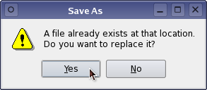

| Home · All Classes · Main Classes · Grouped Classes · Modules · Functions |
The QMessageBox class provides a modal dialog with a short message, an icon, and some buttons. More...
#include <QMessageBox>
Inherits QDialog.
The QMessageBox class provides a modal dialog with a short message, an icon, and some buttons.
Message boxes are used to provide informative messages and to ask simple questions.
QMessageBox provides a range of different messages, arranged roughly along two axes: severity and complexity.
Severity is
| Question | For message boxes that ask a question as part of normal operation. Some style guides recommend using Information for this purpose. | |
| Information | For message boxes that are part of normal operation. | |
| Warning | For message boxes that tell the user about unusual errors. | |
| Critical | For message boxes that tell the user about critical errors. |
The message box has a different icon for each of the severity levels.
Complexity is one button (OK) for simple messages, or two or even three buttons for questions.
There are static functions for the most common cases.
Examples:
If a program is unable to find a supporting file, but can do perfectly well without it:
QMessageBox::information(this, "Application name",
"Unable to find the user preferences file.\n"
"The factory default will be used instead.");
question() is useful for simple yes/no questions:
if (QFile::exists(filename) &&
QMessageBox::question(
this,
tr("Overwrite File? -- Application Name"),
tr("A file called %1 already exists."
"Do you want to overwrite it?")
.arg(filename),
tr("&Yes"), tr("&No"),
QString(), 0, 1))
return false;
warning() can be used to tell the user about unusual errors, or errors which can't be easily fixed:
switch(QMessageBox::warning(this, "Application name",
"Could not connect to the <mumble> server.\n"
"This program can't function correctly "
"without the server.\n\n",
"Retry",
"Quit", 0, 0, 1)) {
case 0: // The user clicked the Retry again button or pressed Enter
// try again
break;
case 1: // The user clicked the Quit or pressed Escape
// exit
break;
}
The text part of all message box messages can be either rich text or plain text. If you specify a rich text formatted string, it will be rendered using the default stylesheet. See QStyleSheet::defaultSheet() for details. With certain strings that contain XML meta characters, the auto-rich text detection may fail, interpreting plain text incorrectly as rich text. In these rare cases, use QStyleSheet::convertFromPlainText() to convert your plain text string to a visually equivalent rich text string or set the text format explicitly with setTextFormat().
Note that the Microsoft Windows User Interface Guidelines recommend using the application name as the window's caption.
Below are more examples of how to use the static member functions. After these examples you will find an overview of the non-static member functions.
Exiting a program is part of its normal operation. If there is unsaved data the user probably should be asked if they want to save the data. For example:
switch(QMessageBox::information(this, "Application name here",
"The document contains unsaved changes\n"
"Do you want to save the changes before exiting?",
"&Save", "&Discard", "Cancel",
0, // Enter == button 0
2)) { // Escape == button 2
case 0: // Save clicked or Alt+S pressed or Enter pressed.
// save
break;
case 1: // Discard clicked or Alt+D pressed
// don't save but exit
break;
case 2: // Cancel clicked or Escape pressed
// don't exit
break;
}
The Escape button cancels the entire exit operation, and pressing Enter causes the changes to be saved before the exit occurs.
Disk full errors are unusual and they certainly can be hard to correct. This example uses predefined buttons instead of hard-coded button texts:
switch(QMessageBox::warning(this, "Application name here",
"Could not save the user preferences,\n"
"because the disk is full. You can delete\n"
"some files and press Retry, or you can\n"
"abort the Save Preferences operation.",
QMessageBox::Retry | QMessageBox::Default,
QMessageBox::Abort | QMessageBox::Escape)) {
case QMessageBox::Retry: // Retry clicked or Enter pressed
// try again
break;
case QMessageBox::Abort: // Abort clicked or Escape pressed
// abort
break;
}
The critical() function should be reserved for critical errors. In this example errorDetails is a QString or const char*, and QString is used to concatenate several strings:
QMessageBox::critical(0, "Application name here",
QString("An internal error occurred. Please ") +
"call technical support at 1234-56789 and report\n"+
"these numbers:\n\n" + errorDetails +
"\n\nApplication will now exit.");
In this example an OK button is displayed.
QMessageBox provides a very simple About box which displays an appropriate icon and the string you provide:
QMessageBox::about(this, "About <Application>",
"<Application> is a <one-paragraph blurb>\n\n"
"Copyright 1991-2003 Such-and-such. "
"<License words here.>\n\n"
"For technical support, call 1234-56789 or see\n"
"http://www.such-and-such.com/Application/\n");
See about() for more information.
If you want your users to know that the application is built using Qt (so they know that you use high quality tools) you might like to add an "About Qt" menu option under the Help menu to invoke aboutQt().
If none of the standard message boxes is suitable, you can create a QMessageBox from scratch and use custom button texts:
QMessageBox mb("Application name here",
"Saving the file will overwrite the original file on the disk.\n"
"Do you really want to save?",
QMessageBox::Information,
QMessageBox::Yes | QMessageBox::Default,
QMessageBox::No,
QMessageBox::Cancel | QMessageBox::Escape);
mb.setButtonText(QMessageBox::Yes, "Save");
mb.setButtonText(QMessageBox::No, "Discard");
switch(mb.exec()) {
case QMessageBox::Yes:
// save and exit
break;
case QMessageBox::No:
// exit without saving
break;
case QMessageBox::Cancel:
// don't save and don't exit
break;
}
QMessageBox defines two enum types: Icon and an unnamed button type. Icon defines the Question, Information, Warning, and Critical icons for each GUI style. It is used by the constructor and by the static member functions question(), information(), warning() and critical(). A function called standardIcon() gives you access to the various icons.
The button types are:
Button types can be combined with two modifiers by using OR, '|':
The text(), icon() and iconPixmap() functions provide access to the current text and pixmap of the message box. The setText(), setIcon() and setIconPixmap() let you change it. The difference between setIcon() and setIconPixmap() is that the former accepts a QMessageBox::Icon and can be used to set standard icons, whereas the latter accepts a QPixmap and can be used to set custom icons.
setButtonText() and buttonText() provide access to the buttons.
QMessageBox has no signals or slots.
The Standard Dialogs example shows how to use QMessageBox as well as other built-in Qt dialogs.

See also QDialog and GUI Design Handbook: Message Box.
This enum describes the predefined buttons and button flags you can assign to a QMessageBox.
| Constant | Value | Description |
|---|---|---|
| QMessageBox::Ok | 1 | An "Ok" button. |
| QMessageBox::Cancel | 2 | A "Cancel" button. |
| QMessageBox::Yes | 3 | A "Yes" button. |
| QMessageBox::No | 4 | A "No" button. |
| QMessageBox::Abort | 5 | An "Abort" button. |
| QMessageBox::Retry | 6 | A "Retry" button. |
| QMessageBox::Ignore | 7 | An "Ignore" button. |
| QMessageBox::YesAll | 8 | A "Yes to all" button. |
| QMessageBox::NoAll | 9 | A "No to all" button. |
The following values are flags that can be OR'ed with the button values.
| Constant | Value | Description |
|---|---|---|
| QMessageBox::Default | 0x100 | The button is default (i.e., QPushButton::default). |
| QMessageBox::Escape | 0x200 | The button is activated by pressing the Escape key. |
The following values are masks that can be used to separate buttons from flags.
| Constant | Value | Description |
|---|---|---|
| QMessageBox::ButtonMask | 0xff | A bitmask that covers all button types. |
| QMessageBox::FlagMask | 0x300 | A bitmask that covers all button flags. |
Finally, the last value is often used as a default value.
| Constant | Value |
|---|---|
| QMessageBox::NoButton | 0 |
This enum has the following values:
| Constant | Value | Description |
|---|---|---|
| QMessageBox::NoIcon | 0 | the message box does not have any icon. |
| QMessageBox::Question | 4 | an icon indicating that the message is asking a question. |
| QMessageBox::Information | 1 | an icon indicating that the message is nothing out of the ordinary. |
| QMessageBox::Warning | 2 | an icon indicating that the message is a warning, but can be dealt with. |
| QMessageBox::Critical | 3 | an icon indicating that the message represents a critical problem. |
This property holds the message box's icon.
The icon of the message box can be one of the following predefined icons:
The actual pixmap used for displaying the icon depends on the current GUI style. You can also set a custom pixmap icon using the QMessageBox::iconPixmap property. The default icon is QMessageBox::NoIcon.
Access functions:
See also iconPixmap.
This property holds the current icon.
The icon currently used by the message box. Note that it's often hard to draw one pixmap that looks appropriate in all GUI styles; you may want to supply a different pixmap for each platform.
Access functions:
See also icon.
This property holds the message box text to be displayed.
The text will be interpreted either as a plain text or as rich text, depending on the text format setting (QMessageBox::textFormat). The default setting is Qt::AutoText, i.e. the message box will try to auto-detect the format of the text.
The default value of this property is an empty string.
Access functions:
See also textFormat.
This property holds the format of the text displayed by the message box.
The current text format used by the message box. See the Qt::TextFormat enum for an explanation of the possible options.
The default format is Qt::AutoText.
Access functions:
See also setText().
Constructs a message box with no text and a button with the label "OK".
If parent is 0, the message box becomes an application-global modal dialog box. If parent is a widget, the message box becomes modal relative to parent.
The parent argument is passed to the QDialog constructor.
Constructs a message box with a caption, a text, an icon, and up to three buttons.
The icon must be one of the following:
Each button, button0, button1 and button2, can have one of the following values:
Use QMessageBox::NoButton for the later parameters to have fewer than three buttons in your message box. If you don't specify any buttons at all, QMessageBox will provide an Ok button.
One of the buttons can be OR-ed with the QMessageBox::Default flag to make it the default button (clicked when Enter is pressed).
One of the buttons can be OR-ed with the QMessageBox::Escape flag to make it the cancel or close button (clicked when Escape is pressed).
QMessageBox mb("Application Name",
"Hardware failure.\n\nDisk error detected\nDo you want to stop?",
QMessageBox::Question,
QMessageBox::Yes | QMessageBox::Default,
QMessageBox::No | QMessageBox::Escape,
QMessageBox::NoButton);
if (mb.exec() == QMessageBox::No) {
// try again
If parent is 0, the message box becomes an application-global modal dialog box. If parent is a widget, the message box becomes modal relative to parent.
The parent and f arguments are passed to the QDialog constructor.
See also setWindowTitle(), setText(), and setIcon().
Destroys the message box.
Displays a simple about box with caption caption and text text. The about box's parent is parent.
about() looks for a suitable icon in four locations:
The about box has a single button labelled "OK".
See also QWidget::windowIcon() and QApplication::activeWindow().
Displays a simple message box about Qt, with caption caption and centered over parent (if parent is not 0). The message includes the version number of Qt being used by the application.
This is useful for inclusion in the Help menu of an application. See the examples/menu/menu.cpp example.
QApplication provides this functionality as a slot.
See also QApplication::aboutQt().
Returns the text of the message box button button, or an empty string if the message box does not contain the button.
See also setButtonText().
Opens a critical message box with the caption caption and the text text. The dialog may have up to three buttons. Each of the button parameters, button0, button1 and button2 may be set to one of the following values:
If you don't want all three buttons, set the last button, or last two buttons to QMessageBox::NoButton.
One button can be OR-ed with QMessageBox::Default, and one button can be OR-ed with QMessageBox::Escape.
Returns the identity (QMessageBox::Ok, or QMessageBox::No, etc.) of the button that was clicked.
If parent is 0, the message box becomes an application-global modal dialog box. If parent is a widget, the message box becomes modal relative to parent.
See also information(), question(), and warning().
This is an overloaded member function, provided for convenience.
Displays a critical error message box with a caption, a text, and 1, 2 or 3 buttons. Returns the number of the button that was clicked (0, 1 or 2).
button0Text is the text of the first button, and is optional. If button0Text is not supplied, "OK" (translated) will be used. button1Text is the text of the second button, and is optional, and button2Text is the text of the third button, and is optional. defaultButtonNumber (0, 1 or 2) is the index of the default button; pressing Return or Enter is the same as clicking the default button. It defaults to 0 (the first button). escapeButtonNumber is the index of the Escape button; pressing Escape is the same as clicking this button. It defaults to -1; supply 0, 1, or 2 to make pressing Escape equivalent to clicking the relevant button.
If parent is 0, the message box becomes an application-global modal dialog box. If parent is a widget, the message box becomes modal relative to parent.
See also information(), question(), and warning().
Opens an information message box with the caption caption and the text text. The dialog may have up to three buttons. Each of the buttons, button0, button1 and button2 may be set to one of the following values:
If you don't want all three buttons, set the last button, or last two buttons to QMessageBox::NoButton.
One button can be OR-ed with QMessageBox::Default, and one button can be OR-ed with QMessageBox::Escape.
Returns the identity (QMessageBox::Ok, or QMessageBox::No, etc.) of the button that was clicked.
If parent is 0, the message box becomes an application-global modal dialog box. If parent is a widget, the message box becomes modal relative to parent.
See also question(), warning(), and critical().
This is an overloaded member function, provided for convenience.
Displays an information message box with caption caption, text text and one, two or three buttons. Returns the index of the button that was clicked (0, 1 or 2).
button0Text is the text of the first button, and is optional. If button0Text is not supplied, "OK" (translated) will be used. button1Text is the text of the second button, and is optional. button2Text is the text of the third button, and is optional. defaultButtonNumber (0, 1 or 2) is the index of the default button; pressing Return or Enter is the same as clicking the default button. It defaults to 0 (the first button). escapeButtonNumber is the index of the Escape button; pressing Escape is the same as clicking this button. It defaults to -1; supply 0, 1 or 2 to make pressing Escape equivalent to clicking the relevant button.
If parent is 0, the message box becomes an application-global modal dialog box. If parent is a widget, the message box becomes modal relative to parent.
Note: If you do not specify an Escape button then if the Escape button is pressed then -1 will be returned. It is suggested that you specify an Escape button to prevent this from happening.
See also question(), warning(), and critical().
Opens a question message box with the caption caption and the text text. The dialog may have up to three buttons. Each of the buttons, button0, button1 and button2 may be set to one of the following values:
If you don't want all three buttons, set the last button, or last two buttons to QMessageBox::NoButton.
One button can be OR-ed with QMessageBox::Default, and one button can be OR-ed with QMessageBox::Escape.
Returns the identity (QMessageBox::Yes, or QMessageBox::No, etc.) of the button that was clicked.
If parent is 0, the message box becomes an application-global modal dialog box. If parent is a widget, the message box becomes modal relative to parent.
See also information(), warning(), and critical().
This is an overloaded member function, provided for convenience.
Displays a question message box with caption caption, text text and one, two or three buttons. Returns the index of the button that was clicked (0, 1 or 2).
button0Text is the text of the first button, and is optional. If button0Text is not supplied, "OK" (translated) will be used. button1Text is the text of the second button, and is optional. button2Text is the text of the third button, and is optional. defaultButtonNumber (0, 1 or 2) is the index of the default button; pressing Return or Enter is the same as clicking the default button. It defaults to 0 (the first button). escapeButtonNumber is the index of the Escape button; pressing Escape is the same as clicking this button. It defaults to -1; supply 0, 1 or 2 to make pressing Escape equivalent to clicking the relevant button.
If parent is 0, the message box becomes an application-global modal dialog box. If parent is a widget, the message box becomes modal relative to parent.
Note: If you do not specify an Escape button then if the Escape button is pressed then -1 will be returned. It is suggested that you specify an Escape button to prevent this from happening.
See also information(), warning(), and critical().
Sets the text of the message box button button to text. Setting the text of a button that is not in the message box is silently ignored.
See also buttonText().
This is an overloaded member function, provided for convenience.
Returns the pixmap used for a standard icon. This allows the pixmaps to be used in more complex message boxes. icon specifies the required icon, e.g. QMessageBox::Question, QMessageBox::Information, QMessageBox::Warning or QMessageBox::Critical.
Opens a warning message box with the caption caption and the text text. The dialog may have up to three buttons. Each of the button parameters, button0, button1 and button2 may be set to one of the following values:
If you don't want all three buttons, set the last button, or last two buttons to QMessageBox::NoButton.
One button can be OR-ed with QMessageBox::Default, and one button can be OR-ed with QMessageBox::Escape.
Returns the identity (QMessageBox::Ok, or QMessageBox::No, etc.) of the button that was clicked.
If parent is 0, the message box becomes an application-global modal dialog box. If parent is a widget, the message box becomes modal relative to parent.
See also information(), question(), and critical().
This is an overloaded member function, provided for convenience.
Displays a warning message box with a caption, a text, and 1, 2 or 3 buttons. Returns the number of the button that was clicked (0, 1, or 2).
button0Text is the text of the first button, and is optional. If button0Text is not supplied, "OK" (translated) will be used. button1Text is the text of the second button, and is optional, and button2Text is the text of the third button, and is optional. defaultButtonNumber (0, 1 or 2) is the index of the default button; pressing Return or Enter is the same as clicking the default button. It defaults to 0 (the first button). escapeButtonNumber is the index of the Escape button; pressing Escape is the same as clicking this button. It defaults to -1; supply 0, 1, or 2 to make pressing Escape equivalent to clicking the relevant button.
If parent is 0, the message box becomes an application-global modal dialog box. If parent is a widget, the message box becomes modal relative to parent.
Note: If you do not specify an Escape button then if the Escape button is pressed then -1 will be returned. It is suggested that you specify an Escape button to prevent this from happening.
See also information(), question(), and critical().
This macro can be used to ensure that the application is run against a recent enough version of Qt. This is especially useful if your application depends on a specific bug fix introduced in a bug-fix release (e.g., 4.0.2).
The argc and argv parameters are the main() function's argc and argv parameters. The version parameter is a string literal that specifies which version of Qt the application requires (e.g., "4.0.2").
Example:
#include <QApplication>
#include <QMessageBox>
int main(int argc, char *argv[])
{
QT_REQUIRE_VERSION(argc, argv, "4.0.2")
QApplication app(argc, argv);
...
return app.exec();
}
| Copyright © 2006 Trolltech | Trademarks | Qt 4.1.3 |